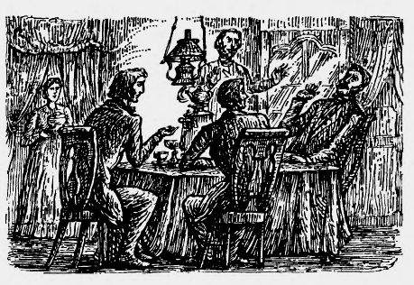

— Дай же отряхнуться, папаша, — говорил несколько сиплым от дороги, но звонким юношеским голосом Аркадий, весело отвечая на отцовские ласки, — я тебя всего запачкаю. — Ничего, ничего, — твердил, умиленно улыбаясь, Николай Петрович и раза два ударил рукою по воротнику сыновней шинели и по собственному пальто. — Покажи-ка себя, покажи-ка, — прибавил он, отодвигаясь, и тотчас же пошел торопливыми шагами к постоялому двору, приговаривая: «Вот сюда, сюда, да лошадей поскорее». Николай Петрович казался гораздо встревоженнее своего сына; он словно потерялся немного, словно робел. Аркадий остановил его. — Папаша, — сказал он, — позволь познакомить тебя с моим добрым приятелем, Базаровым, о котором я тебе так часто писал. Он так любезен, что согласился погостить у нас.
Николай Петрович быстро обернулся и, подойдя к человеку высокого роста в длинном балахоне с кистями, только что вылезшему из тарантаса, крепко стиснул его обнаженную красную руку, которую тот не сразу ему подал. — Душевно рад, — начал он, — и благодарен за доброе намерение посетить нас; надеюсь... позвольте узнать ваше имя и отчество? — Евгений Васильев, — отвечал Базаров ленивым, но мужественным голосом и, отвернув воротник балахона, показал Николаю Петровичу все свое лицо. Длинное и худое, с широким лбом, кверху плоским, книзу заостренным носом, большими зеленоватыми глазами и висячими бакенбардами песочного цвету, оно оживлялось спокойной улыбкой и выражало самоуверенность и ум. — Надеюсь, любезнейший Евгений Васильич, что вы не соскучитесь у нас, — продолжал Николай Петрович.
Тонкие губы Базарова чуть тронулись; но он ничего не отвечал и только приподнял фуражку. Его темно-белокурые волосы, длинные и густые, не скрывали крупных выпуклостей просторного черепа. — Так как же, Аркадий, — заговорил опять Николай Петрович, оборачиваясь к сыну, — сейчас закладывать лошадей, что ли? Или вы отдохнуть хотите? — Дома отдохнем, папаша; вели закладывать. — Сейчас, сейчас, — подхватил отец. — Эй, Петр, слышишь? Распорядись, братец, поживее.
Петр, который в качестве усовершенствованного слуги не подошел к ручке барича, а только издали поклонился ему, снова скрылся под воротами. — Я здесь с коляской, но и для твоего тарантаса есть тройка, — хлопотливо говорил Николай Петрович, между тем как Аркадий пил воду из железного ковшика, принесенного хозяйкой постоялого двора, а Базаров закурил трубку и подошел к ямщику, отпрягавшему лошадей, — только коляска двухместная, и вот я не знаю, как твой приятель... — Он в тарантасе поедет, — перебил вполголоса Аркадий. — Ты с ним, пожалуйста, не церемонься. Он чудесный малый, такой простой — ты увидишь. Кучер Николая Петровича вывел лошадей. — Ну, поворачивайся, толстобородый! — обратился Базаров к ямщику. — Слышь, Митюха, — подхватил другой тут же стоявший ямщик с руками, засунутыми в задние прорехи тулупа, — барин-то тебя как прозвал? Толстобородый и есть. Митюха только шапкой тряхнул и потащил вожжи с потной коренной. — Живей, живей, ребята, подсобляйте, — воскликнул Николай Петрович, — на водку будет! В несколько минут лошади были заложены; отец с сыном поместились в коляске; Петр взобрался на козлы; Базаров вскочил в тарантас, уткнулся головой в кожаную подушку — и оба экипажа покатили.